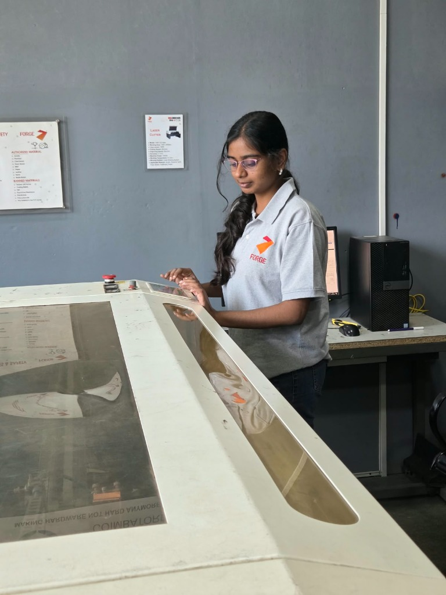
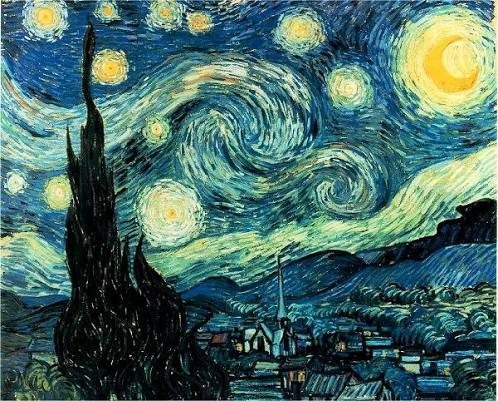
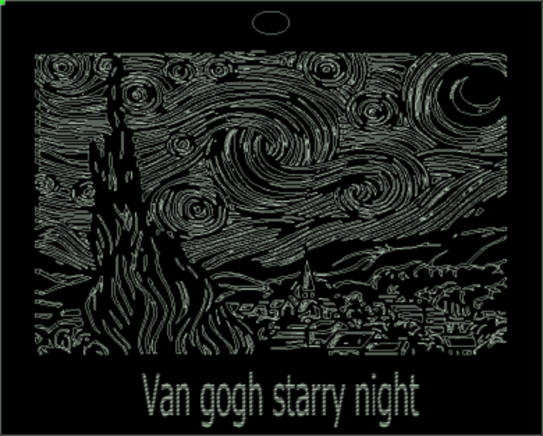
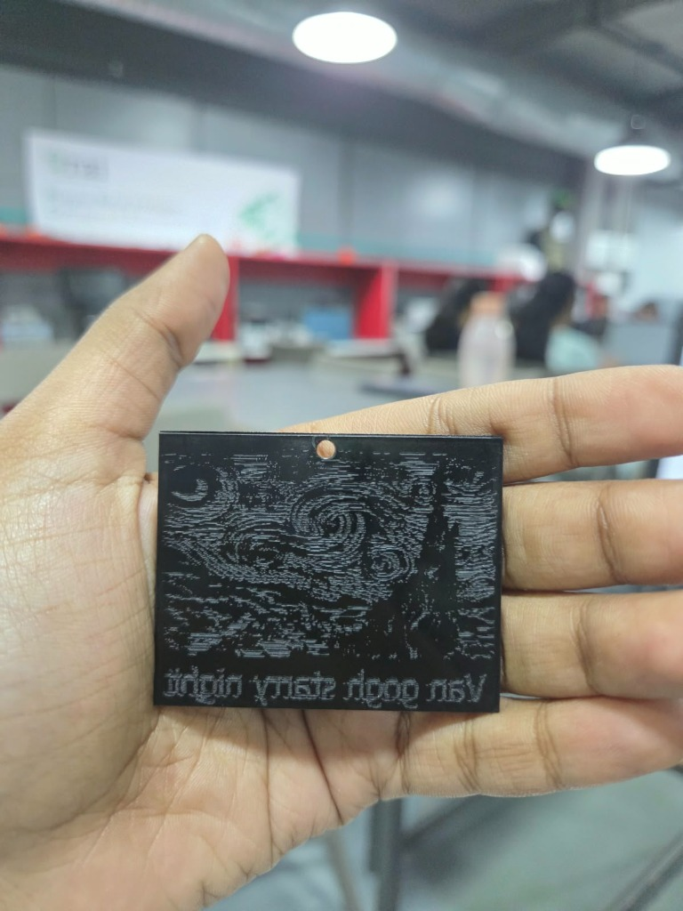
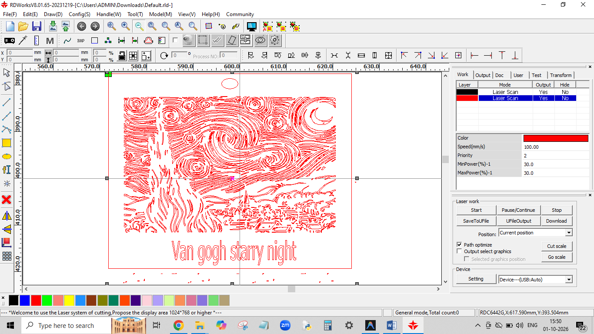
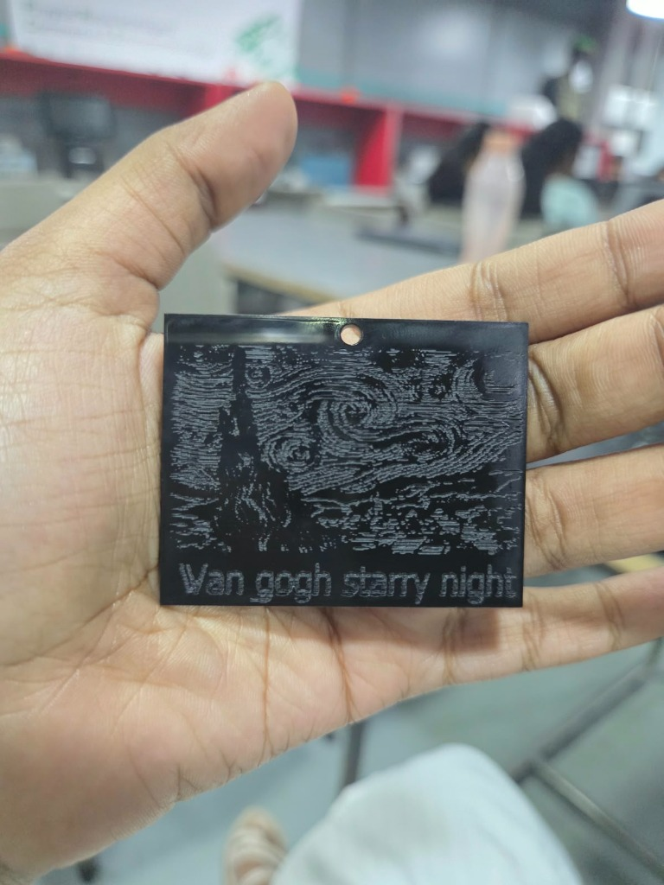

Lab Safety & Safety Rules
Before starting the laser-cutting activity, we were introduced to the safety precautions that need to be followed while operating the machine.
Laser Safety
- Wear safety goggles and gloves.
- Operate the machine only with proper settings for the selected material.
- Incorrect settings can result in fire.
- Use only authorized materials because unsuitable materials can create toxic fumes.
- Never leave the laser cutter unattended.
- Keep the machine door closed while it is running.
- Do not switch the machine off directly while it is operating.
- Report missing tools, supplies or material damage to the technical team.
- Clean the work area after use.
Exhaust System
The exhaust/blower system removes smoke and fumes generated during cutting and engraving. The machine has a lower blowing system.
Chiller
The blower and chiller should be switched on while the machine is running.
Earthing
The machine was operated as part of the laboratory's electrical safety setup and normal lab safety procedures.
Air Assist / Blowing System
The machine uses a lower blowing system during operation.
General Machine Safety
Only appropriate materials and settings should be used. The operator should remain attentive throughout the process and consult a technical team member whenever unsure.
Acrylic, plywood, cardboard, foam board, MDF, paper, leather, Mylar and matte board.
Rubber, casting resins, felt, foam core/Thermocol, polystyrene, polycarbonate and PVC-family materials.
Machine Details
The machine used for this practical activity is an industrial-scale CO₂ laser cutter housed at the FORGE laboratory facility:
| Specification | Details |
|---|---|
| Make / Facility | FORGE |
| Model | 1490 CO₂ Laser |
| Working / Bed Size | 1300 × 900 mm |
| Laser Tube Power | 150 W |
| Machine Power | 1000 W |
| Control Software | RDWorks |
| Listed Cutting Speed | 25 m/min |
| Listed Engraving Speed | 55 m/min |
| Accuracy | 0.1 mm |
| Working Temperature | 0–40 °C |
| Blowing System | Lower Blowing System |

Materials Used
| Material | Details |
|---|---|
| Material Type | Acrylic |
| Thickness | 2 mm |
| Colour | Black |
| Application | Laser-cut keychain |
| Source | Laboratory-provided material |
Selected Design/Image
For my design, I selected Vincent van Gogh's The Starry Night. I chose this image because I liked its visual style and wanted to experiment with how a detailed artwork could be translated into a physical laser-cut/engraved object. I incorporated the design into a small keychain.

Image-to-DXF Conversion
The original image was in JPG format. I used Converto to convert the JPG image into a DXF file and then imported the DXF file into RDWorks.
- Selected The Starry Night image.
- Uploaded the JPG to Converto.
- Converted the image to DXF.
- Downloaded the converted DXF file.
- Imported the DXF into RDWorks.
- Prepared the design for cutting and scanning/engraving.
File Preparation
After importing the DXF into RDWorks, I prepared the design before sending it to the machine.

My first attempt showed why orientation is important. I forgot to mirror the design, so the letters appeared reversed.
For the second attempt, I corrected the orientation and mirrored the design before laser processing.

Nesting & Layout in RDWorks
The DXF file was imported into RDWorks and arranged according to the available acrylic sheet. The layout included the keychain design, The Starry Night artwork, added text, and separate operations for cutting and scanning. Different layer colours were used to distinguish the operations.

Vector through-cutting assigned to cut the external perimeter contour and punch the top keychain attachment hole completely through the 2 mm acrylic.
High-speed raster passes etching the surface layer of the Starry Night swirls, crescent moon, and text lettering without cutting through the sheet.
Final Machine Settings
| Parameter | Actual Value |
|---|---|
| Material | 2 mm black acrylic |
| Thickness | 2 mm |
| Operation | Cutting + Scanning/Engraving |
| Speed | [Actual RDWorks value to be entered] |
| Minimum Power | [Actual RDWorks value to be entered] |
| Maximum Power | [Actual RDWorks value to be entered] |
| Number of Passes | [Actual RDWorks value to be entered] |
| Frequency | [Actual RDWorks value to be entered] |
Cutting Process
The 2 mm black acrylic sheet was placed inside the laser cutter. The required safety procedures were followed, including switching on the blower and chiller and keeping the machine door closed during operation.
During my first attempt, I discovered that the design had not been mirrored correctly. The letters appeared reversed and the overall output was not as intended.
I was given a second opportunity to repeat the process. After correcting the orientation and mirroring the design, I ran the laser-cutting process again. The actual processing took less than five minutes.
Final Result – Hero Shot
The final result was a black acrylic keychain featuring the selected Starry Night-inspired design and text. After correcting the mirroring issue, the second output came out clean and matched the intended orientation much better.

Problems Faced & Solutions
| Problem | Possible / Identified Cause | Solution Implemented | Final Outcome |
|---|---|---|---|
| Letters appeared reversed in first output | Design was not mirrored before laser processing | Mirrored the design in RDWorks before the second attempt | Second output had the correct orientation |
| First output did not look as intended | Incorrect design orientation | Checked and corrected the design before reprocessing | Final design came out successfully |
| JPG image needed to be used in the laser workflow | Original image was in JPG format | Converted JPG to DXF using Converto | DXF was imported into RDWorks |
Reflection
This activity was my first hands-on experience with laser cutting, and I found it interesting to see how a digital image could be turned into a physical product.
I learned how to use RDWorks, convert an image into a DXF file, prepare a design, use different colours for cutting and scanning, add text, and prepare the design for the laser cutter.
The biggest challenge I faced was during my first attempt. I forgot to mirror the design, which caused the letters to appear reversed. Although the first result was not successful, it helped me understand the importance of checking the orientation before starting the machine. On my second attempt, I corrected the problem and got a much better result.
I also learned that laser cutting is not simply about placing material inside a machine. The design preparation, file format, orientation, material, settings and safety procedures all affect the final result.
If I were doing the activity again, I would check the orientation and all the design layers carefully before starting the machine. I would also document the exact machine settings and process more systematically so that the same result could be reproduced later.
Source Files
| Required File | Status |
|---|---|
| DXF | To be attached |
| AI | To be attached |
References / Credits
- FORGE Lab — Laser cutter safety rules and machine information displayed in the laboratory.
- RDWorks — Software used for laser-cutting design preparation.
- Converto — Used for JPG-to-DXF conversion.
- Vincent van Gogh, The Starry Night — Selected as the reference artwork for the design.